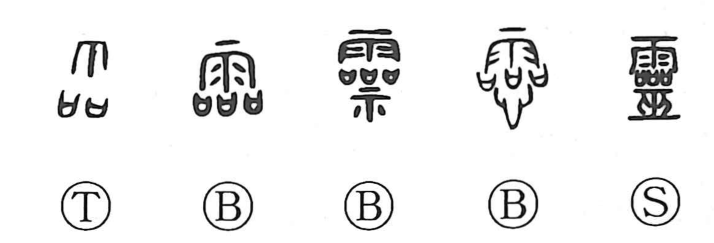

霊

Kun: tama, mitama | On: rei, ryo
spirit ・ soul ・ divine spirit ・ ghost
Explanation
The character 霊 goes back to the older graph 靈, which depicted a rain-invoking rite: three ritual receptacles for covenant-prayers set out in a row, together with a shaman-priestess 巫 who conducts the ceremony. It first named the rainmaking ritual itself. Because the same array and supplicatory act were used when calling down the divine presence, the graph came to denote the numinous spirits so invoked and, more broadly, everything pertaining to divine agency—hence senses like deity, shaman, soul, and even the idea of surpassing excellence. In bronze inscriptions the graph also appears with 示, the altar-table of worship, or with 心, the heart, underscoring its sacred and inner, animating force.